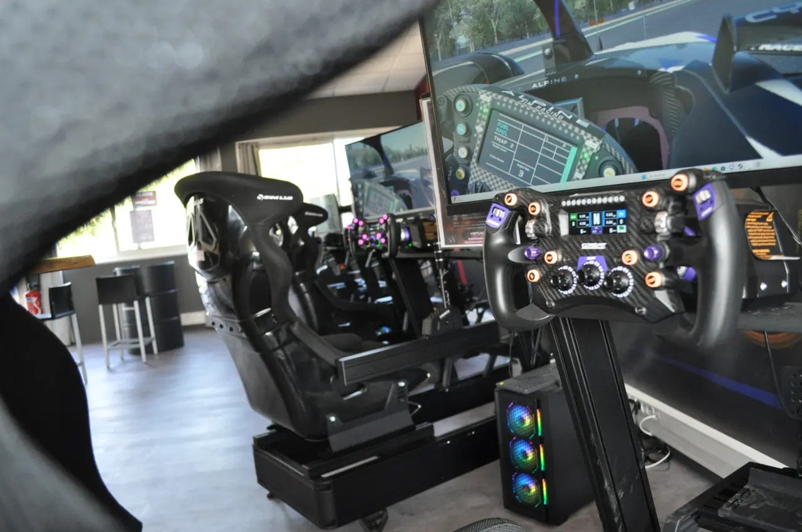

VCE ESPORT / RACE CONTROL TEAM
VALIDATION DES SÉANCES
Séances transmises depuis AVEC COACH, SANS COACH et COACH IRL. Les décisions sont publiées dans Supabase et horodatées par le serveur (heure de Paris).
Accès STAFF requis. Se connecter

Les séances envoyées sont centralisées dans Supabase et visibles par tous les comptes STAFF autorisés.